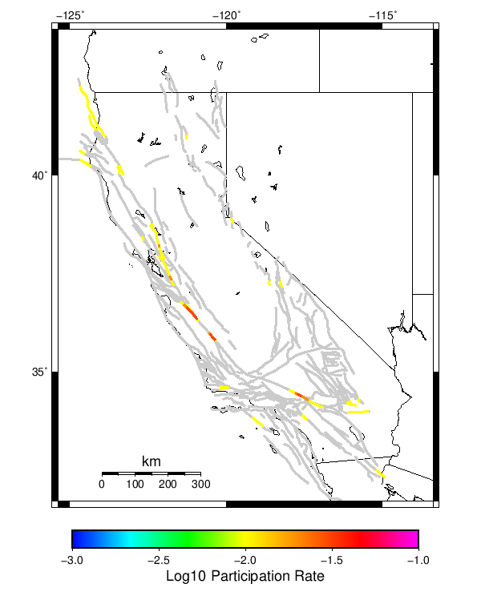
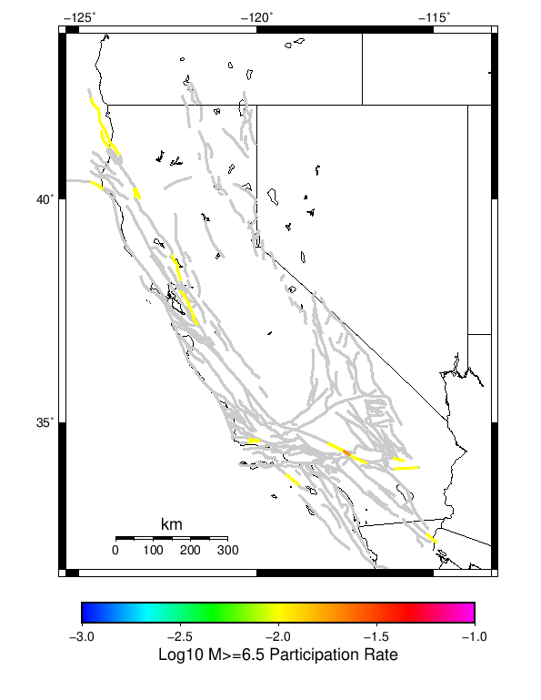
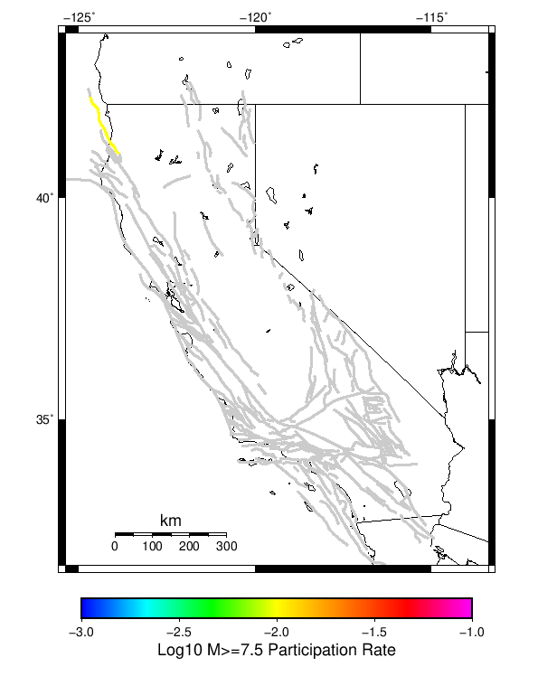
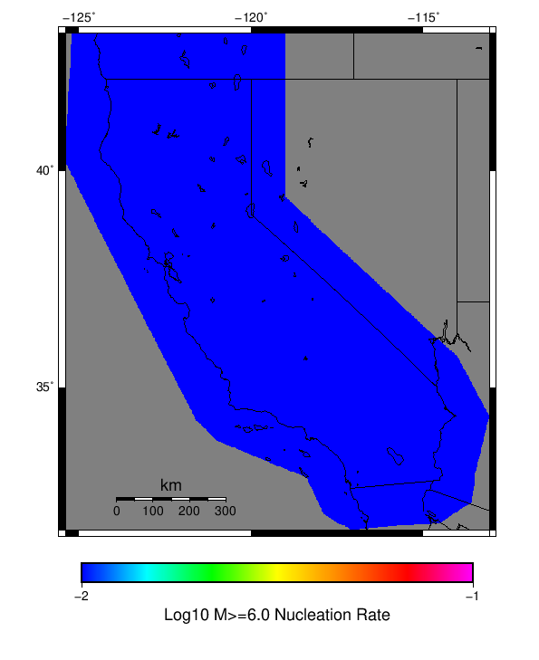

Spontaneous Only Results
| Spontaneous Only |
|---|
| Num Simulations | 10 |
| Start Time | 2018/01/01 00:00:00 UTC |
| Start Time Epoch Milliseconds | 1514764800000 |
| Duration | 10 Years |
| Includes Spontaneous? | true |
| Trigger Ruptures | (none) |
| Historical Ruptures | (none) |
Table Of Contents
Magnitude Frequency Distribution
(top)
Legend
- Mean (thick black line): mean annual rate across all 10 catalogs
- 2.5%,97.5% (thin black lines): annual rate percentiles across all 10 catalogs
- Median (thin blue line): median annual rate across all 10 catalogs
- Mode (thin cyan line): modal annual rate across all 10 catalogs (scaled to annualized value)
- 10 yr Probability (thin red line): 10 year probability calculated as the fraction of catalogs with at least 1 occurrence
- 10 yr Supraseismogenic Probability (thin dashed red line): same as above, but only for supraseismogenic ruptures on explicitly modeled UCERF3 faults
- 95% Conf (light red shaded region): binomial 95% confidence bounds on probability

| Mag | Mean | 2.5 %ile | 97.5 %ile | Median | Mode | 10 yr Probability | 10 yr Supra-Seis Prob |
|---|
| M≥2.5 | 2180.360 | 1434.900 | 3652.400 | 2048.000 | 2173.700 | 1.000 (100.00%) | 1.000 (100.00%) |
| M≥2.6 | 1732.950 | 1140.200 | 2897.700 | 1625.800 | 1729.100 | 1.000 (100.00%) | 1.000 (100.00%) |
| M≥2.7 | 1376.680 | 906.900 | 2305.100 | 1285.300 | 1375.400 | 1.000 (100.00%) | 1.000 (100.00%) |
| M≥2.8 | 1093.910 | 724.800 | 1823.500 | 1024.900 | 1098.300 | 1.000 (100.00%) | 1.000 (100.00%) |
| M≥2.9 | 870.320 | 572.100 | 1459.200 | 817.300 | 868.900 | 1.000 (100.00%) | 1.000 (100.00%) |
| M≥3 | 690.730 | 449.400 | 1163.300 | 646.600 | 690.900 | 1.000 (100.00%) | 1.000 (100.00%) |
| M≥3.1 | 548.590 | 360.600 | 922.700 | 508.600 | 545.200 | 1.000 (100.00%) | 1.000 (100.00%) |
| M≥3.2 | 435.630 | 288.600 | 728.000 | 399.600 | 435.600 | 1.000 (100.00%) | 1.000 (100.00%) |
| M≥3.3 | 345.910 | 227.400 | 578.000 | 315.000 | 347.000 | 1.000 (100.00%) | 1.000 (100.00%) |
| M≥3.4 | 274.810 | 181.800 | 460.900 | 246.600 | 275.200 | 1.000 (100.00%) | 1.000 (100.00%) |
| M≥3.5 | 218.340 | 142.700 | 365.500 | 199.000 | 219.600 | 1.000 (100.00%) | 1.000 (100.00%) |
| M≥3.6 | 173.000 | 112.500 | 287.400 | 160.800 | 170.900 | 1.000 (100.00%) | 1.000 (100.00%) |
| M≥3.7 | 137.530 | 89.100 | 225.200 | 128.900 | 135.900 | 1.000 (100.00%) | 1.000 (100.00%) |
| M≥3.8 | 109.840 | 70.300 | 180.100 | 104.300 | 109.600 | 1.000 (100.00%) | 1.000 (100.00%) |
| M≥3.9 | 87.350 | 55.900 | 142.000 | 82.300 | 88.900 | 1.000 (100.00%) | 1.000 (100.00%) |
| M≥4 | 69.630 | 44.600 | 115.600 | 65.800 | 70.900 | 1.000 (100.00%) | 1.000 (100.00%) |
| M≥4.1 | 55.220 | 37.000 | 91.300 | 52.800 | 53.700 | 1.000 (100.00%) | 1.000 (100.00%) |
| M≥4.2 | 43.810 | 28.500 | 71.300 | 42.500 | 47.500 | 1.000 (100.00%) | 1.000 (100.00%) |
| M≥4.3 | 34.500 | 21.800 | 57.000 | 33.100 | 34.000 | 1.000 (100.00%) | 1.000 (100.00%) |
| M≥4.4 | 27.140 | 16.800 | 44.800 | 25.300 | 27.800 | 1.000 (100.00%) | 1.000 (100.00%) |
| M≥4.5 | 21.230 | 12.500 | 35.700 | 19.600 | 19.600 | 1.000 (100.00%) | 1.000 (100.00%) |
| M≥4.6 | 16.720 | 8.600 | 28.300 | 16.400 | 17.700 | 1.000 (100.00%) | 1.000 (100.00%) |
| M≥4.7 | 13.470 | 7.000 | 23.100 | 13.200 | 13.900 | 1.000 (100.00%) | 1.000 (100.00%) |
| M≥4.8 | 10.830 | 5.300 | 18.500 | 10.700 | 11.800 | 1.000 (100.00%) | 1.000 (100.00%) |
| M≥4.9 | 8.550 | 4.400 | 14.200 | 8.400 | 9.400 | 1.000 (100.00%) | 1.000 (100.00%) |
| M≥5 | 6.710 | 3.100 | 11.800 | 6.300 | 6.600 | 1.000 (100.00%) | 1.000 (100.00%) |
| M≥5.1 | 5.400 | 2.800 | 9.900 | 5.200 | 5.400 | 1.000 (100.00%) | 1.000 (100.00%) |
| M≥5.2 | 4.370 | 2.800 | 7.900 | 4.100 | 4.600 | 1.000 (100.00%) | 1.000 (100.00%) |
| M≥5.3 | 3.490 | 2.200 | 6.100 | 3.400 | 3.400 | 1.000 (100.00%) | 1.000 (100.00%) |
| M≥5.4 | 2.760 | 1.700 | 4.700 | 2.700 | 2.900 | 1.000 (100.00%) | 1.000 (100.00%) |
| M≥5.5 | 2.140 | 1.100 | 4.100 | 2.000 | 2.100 | 1.000 (100.00%) | 1.000 (100.00%) |
| M≥5.6 | 1.760 | 1.000 | 3.300 | 1.600 | 1.600 | 1.000 (100.00%) | 1.000 (100.00%) |
| M≥5.7 | 1.410 | 0.800 | 2.700 | 1.300 | 1.300 | 1.000 (100.00%) | 1.000 (100.00%) |
| M≥5.8 | 1.100 | 0.400 | 2.100 | 1.000 | 1.000 | 1.000 (100.00%) | 1.000 (100.00%) |
| M≥5.9 | 0.870 | 0.100 | 1.500 | 0.900 | 0.900 | 1.000 (100.00%) | 0.900 (90.00%) |
| M≥6 | 0.700 | 0.100 | 1.300 | 0.700 | 0.800 | 1.000 (100.00%) | 0.900 (90.00%) |
| M≥6.1 | 0.550 | 0.100 | 0.800 | 0.600 | 0.700 | 1.000 (100.00%) | 0.900 (90.00%) |
| M≥6.2 | 0.460 | 0.100 | 0.700 | 0.500 | 0.600 | 1.000 (100.00%) | 0.900 (90.00%) |
| M≥6.3 | 0.410 | 0.000 | 0.700 | 0.400 | 0.400 | 0.900 (90.00%) | 0.900 (90.00%) |
| M≥6.4 | 0.320 | 0.000 | 0.600 | 0.300 | 0.300 | 0.900 (90.00%) | 0.800 (80.00%) |
| M≥6.5 | 0.220 | 0.000 | 0.300 | 0.200 | 0.300 | 0.900 (90.00%) | 0.700 (70.00%) |
| M≥6.6 | 0.170 | 0.000 | 0.300 | 0.200 | 0.300 | 0.800 (80.00%) | 0.700 (70.00%) |
| M≥6.7 | 0.130 | 0.000 | 0.300 | 0.100 | 0.200 | 0.700 (70.00%) | 0.600 (60.00%) |
| M≥6.8 | 0.070 | 0.000 | 0.200 | 0.000 | 0.000 | 0.400 (40.00%) | 0.400 (40.00%) |
| M≥6.9 | 0.060 | 0.000 | 0.200 | 0.000 | 0.000 | 0.400 (40.00%) | 0.400 (40.00%) |
| M≥7 | 0.060 | 0.000 | 0.200 | 0.000 | 0.000 | 0.400 (40.00%) | 0.400 (40.00%) |
| M≥7.1 | 0.030 | 0.000 | 0.100 | 0.000 | 0.000 | 0.300 (30.00%) | 0.200 (20.00%) |
| M≥7.2 | 0.020 | 0.000 | 0.100 | 0.000 | 0.000 | 0.200 (20.00%) | 0.100 (10.00%) |
| M≥7.3 | 0.010 | 0.000 | 0.100 | 0.000 | 0.000 | 0.100 (10.00%) | 0.100 (10.00%) |
| M≥7.4 | 0.010 | 0.000 | 0.100 | 0.000 | 0.000 | 0.100 (10.00%) | 0.100 (10.00%) |
| M≥7.5 | 0.010 | 0.000 | 0.100 | 0.000 | 0.000 | 0.100 (10.00%) | 0.100 (10.00%) |
| M≥7.6 | 0.010 | 0.000 | 0.100 | 0.000 | 0.000 | 0.100 (10.00%) | 0.100 (10.00%) |
| M≥7.7 | 0.010 | 0.000 | 0.100 | 0.000 | 0.000 | 0.100 (10.00%) | 0.100 (10.00%) |
| M≥7.8 | 0.000 | 0.000 | 0.000 | 0.000 | 0.000 | 0.000 (0.00%) | 0.000 (0.00%) |
| M≥7.9 | 0.000 | 0.000 | 0.000 | 0.000 | 0.000 | 0.000 (0.00%) | 0.000 (0.00%) |
| M≥8 | 0.000 | 0.000 | 0.000 | 0.000 | 0.000 | 0.000 (0.00%) | 0.000 (0.00%) |
| M≥8.1 | 0.000 | 0.000 | 0.000 | 0.000 | 0.000 | 0.000 (0.00%) | 0.000 (0.00%) |
| M≥8.2 | 0.000 | 0.000 | 0.000 | 0.000 | 0.000 | 0.000 (0.00%) | 0.000 (0.00%) |
| M≥8.3 | 0.000 | 0.000 | 0.000 | 0.000 | 0.000 | 0.000 (0.00%) | 0.000 (0.00%) |
| M≥8.4 | 0.000 | 0.000 | 0.000 | 0.000 | 0.000 | 0.000 (0.00%) | 0.000 (0.00%) |
| M≥8.5 | 0.000 | 0.000 | 0.000 | 0.000 | 0.000 | 0.000 (0.00%) | 0.000 (0.00%) |
| M≥8.6 | 0.000 | 0.000 | 0.000 | 0.000 | 0.000 | 0.000 (0.00%) | 0.000 (0.00%) |
| M≥8.7 | 0.000 | 0.000 | 0.000 | 0.000 | 0.000 | 0.000 (0.00%) | 0.000 (0.00%) |
| M≥8.8 | 0.000 | 0.000 | 0.000 | 0.000 | 0.000 | 0.000 (0.00%) | 0.000 (0.00%) |
| M≥8.9 | 0.000 | 0.000 | 0.000 | 0.000 | 0.000 | 0.000 (0.00%) | 0.000 (0.00%) |
| M≥9 | 0.000 | 0.000 | 0.000 | 0.000 | 0.000 | 0.000 (0.00%) | 0.000 (0.00%) |
Section Participation
(top)
Section Participation Plots
(top)
| Min Mag | Complete Catalog (including spontaneous) |
|---|
| All Supra. Seis. |  |
| M≥6.5 |  |
| M≥7 | |
| M≥7.5 |  |
Supra-Seismogenic Parent Sections Table
(top)
First 10 of 34 with matching ruptures shown
| Parent Name | Total Mean Annual Rate | Total 10 Year Prob |
|---|
| San Andreas (Creeping Section) 2011 CFM | 0.04 | 0.3 |
| San Andreas (Mojave S) | 0.03 | 0.3 |
| San Andreas (Parkfield) | 0.03 | 0.3 |
| Calaveras (Central) 2011 CFM | 0.02 | 0.2 |
| Green Valley 2011 CFM | 0.02 | 0.1 |
| Hunting Creek - Berryessa 2011 CFM | 0.02 | 0.1 |
| San Andreas (San Bernardino N) | 0.02 | 0.2 |
| Bartlett Springs 2011 CFM | 0.01 | 0.1 |
| Bear River fault zone | 0.01 | 0.1 |
| Big Lagoon - Bald Mtn 2011 CFM | 0.01 | 0.1 |
M≥6.5 Parent Sections Table
(top)
First 10 of 21 with matching ruptures shown
| Parent Name | Total Mean Annual Rate | Total 10 Year Prob |
|---|
| San Andreas (San Bernardino N) | 0.02 | 0.2 |
| Bartlett Springs 2011 CFM | 0.01 | 0.1 |
| Big Lagoon - Bald Mtn 2011 CFM | 0.01 | 0.1 |
| Blue Cut | 0.01 | 0.1 |
| Calaveras (Central) 2011 CFM | 0.01 | 0.1 |
| Calaveras (No) 2011 CFM | 0.01 | 0.1 |
| Cerro Prieto | 0.01 | 0.1 |
| Eaton Roughs 2011 CFM | 0.01 | 0.1 |
| Franklin 2011 CFM | 0.01 | 0.1 |
| Green Valley 2011 CFM | 0.01 | 0.1 |
M≥7 Parent Sections Table
(top)
| Parent Name | Total Mean Annual Rate | Total 10 Year Prob |
|---|
| Big Lagoon - Bald Mtn 2011 CFM | 0.01 | 0.1 |
| Blue Cut | 0.01 | 0.1 |
| Calaveras (Central) 2011 CFM | 0.01 | 0.1 |
| Calaveras (No) 2011 CFM | 0.01 | 0.1 |
| Franklin 2011 CFM | 0.01 | 0.1 |
| Hayward (So) extension 2011 CFM | 0.01 | 0.1 |
| San Andreas (Mojave S) | 0.01 | 0.1 |
| San Andreas (San Bernardino N) | 0.01 | 0.1 |
| Trinidad (alt1) | 0.01 | 0.1 |
M≥7.5 Parent Sections Table
(top)
| Parent Name | Total Mean Annual Rate | Total 10 Year Prob |
|---|
| Big Lagoon - Bald Mtn 2011 CFM | 0.01 | 0.1 |
Gridded Nucleation
(top)
| Min Mag | Complete Catalog (including spontaneous) |
|---|
| M≥2.5 |  |
| M≥5 |  |
| M≥6 |  |
| M≥7 | |
(top)
{
"numSimulations": 10,
"duration": 10.0,
"startYear": 2018,
"includeSpontaneous": true,
"randomSeed": 123456789,
"binaryOutput": false,
"binaryOutputFilters": [
{
"prefix": "results_complete",
"descendantsOnly": false
},
{
"prefix": "results_m5_preserve_chain",
"minMag": 5.0,
"preserveChainBelowMag": true,
"descendantsOnly": false
}
],
"forceRecalc": false,
"simulationName": "Spontaneous Only",
"numRetries": 3,
"outputDir": "$ETAS_LAUNCHER/tutorial/user_output/spontaneous_only",
"cacheDir": "$ETAS_LAUNCHER/inputs/cache_fm3p1_ba",
"fssFile": "$ETAS_LAUNCHER/inputs/2013_05_10-ucerf3p3-production-10runs_COMPOUND_SOL_FM3_1_SpatSeisU3_MEAN_BRANCH_AVG_SOL.zip",
"probModel": "FULL_TD",
"applySubSeisForSupraNucl": true,
"totRateScaleFactor": 1.14,
"gridSeisCorr": true,
"timeIndependentERF": false,
"griddedOnly": false,
"imposeGR": false,
"includeIndirectTriggering": true,
"gridSeisDiscr": 0.1,
"catalogCompletenessModel": "RELAXED"
}